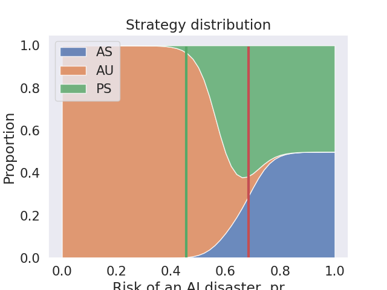

Thoughts on: Recommendations for the AI RMF

What is NIST’s AI RMF?
The US National Institute for Standards and Technology (NIST) is preparing an initial draft of their Risk Managament Framework for AI (the AI RMF). This is a non-binding set of standards that developers of AI are encouraged to follow. These standards aim to provided recommendations that companies can follow to minimise regulatory uncertainty, even if they operate across nations.
Some questions which arise:
- Do organisations follow NIST recommendations? Which ones?
- If organisations do not follow NIST recommendations, are there any soft pressures to encourage them to reconsider?
- Is there precedence for NIST to accept recommendations from academic institutions into their guidance for industry, as the current paper hopes to achieve?
In addition, the topic of regulating AI systems raises a number of questions which are important to address:
- Is it reasonable to expect that AI systems have a sufficiently high probability of being powerful enough to risk catastrophic outcomes on a relevant timeline?
- Are these risks more likely if there is competitive and geopolitical incentives to develop AI capabilities faster?
- What do other academics think?
- What do other policy makers think?
- Is there any reason to expect the EU AI Act and US regulation to coordinate?
nbdev in industry
We have piloted nbdev at several companies. We were delighted to receive the following feedback, which fits our own experience using and developing nbdev:
David Berg, on using nbdev for internal documentation at Netflix: “Prior to using nbdev, documentation was the most cumbersome aspect of our software development process… Using nbdev allows us to spend more time creating rich prose around the many code snippets guaranteeing the whole experience is robust. nbdev has turned what was once a chore into a natural extension of the notebook-based testing we were already doing.”
Erik Gaasedelen, on using nbdev in production at Lyft: “I use this in production at my company. It’s an awesome tool… nbdev streamlines everything so I can write docs, tests, and code all in one place… The packaging is also really well thought out. From my point of view it is close to a Pareto improvement over traditional Python library development.”
Hugo Bowne-Anderson, on using nbdev for Outerbounds: “nbdev has transformed the way we write documentation. Gone are the days of worrying about broken code examples when our API changes or [due to] human errors associated with copying & pasting code into markdown files. The authoring experience of nbdev… [allows] us to write prose and live code in a unified interface, which allows more experimentation… On top of this, nbdev allows us to include unit tests in our documentation which mitigates the burden of maintaining the docs over time.”
Roxanna Pourzand, on using nbdev for Transform: “We’re so excited about using nbdev. Our product is technical so our resulting documentation includes a lot of code-based examples. Before nbdev, we had no way of maintaining our code examples and ensuring that it was up-to-date for both command inputs and outputs. It was all manual. With nbdev, we now have this under control in a sustainable way. Since we’ve deployed these docs, we also had a situation where we were able to identify a bug in one of our interfaces, which we found by seeing the error that was output in the documentation.”
What’s nbdev?
Nbdev embraces the dynamic nature of python and REPL-driven development in ways that traditional IDEs and software development workflows cannot. We thoroughly discussed the motivation, history, and goals of nbdev in this initial launch post three years ago. The creator of Jupyter, Fernando Pérez, told us:
[Nbdev] should be celebrated and used a lot more - I have kept a tab with your original nbdev blog post open for months in Chrome because of how often I refer to it and point others to this work
In short, nbdev embraces ideas from literate programming and exploratory programming. These paradigms have been revisited in platforms like XCode Playgrounds and languages like Smalltalk, LISP, and Mathematica. With nbdev, we sought to push these paradigms even further by enabling it for one of the most popular dynamic programming languages in the world: Python.
Even though nbdev is most widely used in scientific computing communities due to its integration with Jupyter Notebooks, we’ve found that nbdev is well suited for a much wider range of software. We have used nbdev to write deep learning libraries, API clients, python language extensions,terminal user interfaces, and more!
Hamel: When I use nbdev, my colleagues are often astounded by how quickly I can create and distribute high-quality python packages. I consider nbdev to be a superpower that allows me to create tests and documentation without any additional friction, which makes all of my projects more maintainable. I also find writing software with nbdev to be more fun and productive as I can iterate very fast on ideas relative to more traditional software engineering workflows. Lastly, with nbdev I can also use traditional text-based IDEs if I want to, so I get the best of both worlds.
What we learned after three years of using nbdev
While nbdev was originally developed to simplify the software development workflow for various fast.ai projects, we found that users wanted to extend nbdev to:
- Write and publish blog posts, books, papers, and other types of documents with Jupyter Notebooks
- Document existing codebases not written in nbdev
- Accommodate traditional Python conventions–for those constrained in how their code is organized and formatted
- Publish content using any static site generator
While we created projects such as fastpages and fastdoc to accomplish some of these tasks, we realized that it would be better to have a single set of flexible tools to accomplish all of them. To this end, we were extremely excited to discover Quarto, an open-source technical publishing system built on pandoc.
Hamel: The more I used nbdev for creating Python modules, the more I wanted to use it for writing blogs and documenting existing codebases. The ability to customize the way notebooks are rendered (hiding vs. showing cells, stripping output, etc.), along with the facilities for including unit tests, made it my go-to authoring tool for all technical content. I’m excited that nbdev2 unlocks all of these possibilities for everyone!